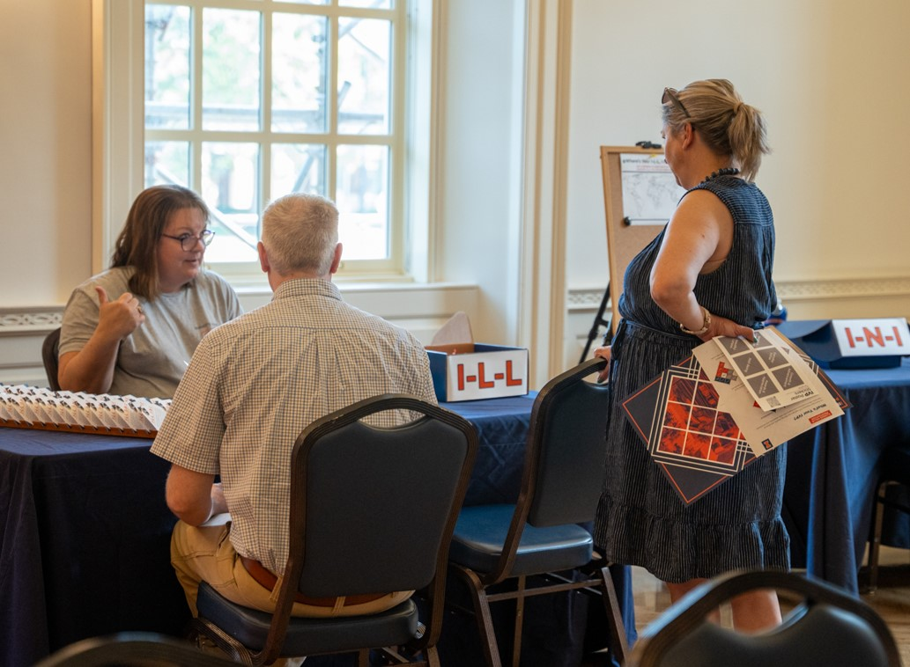
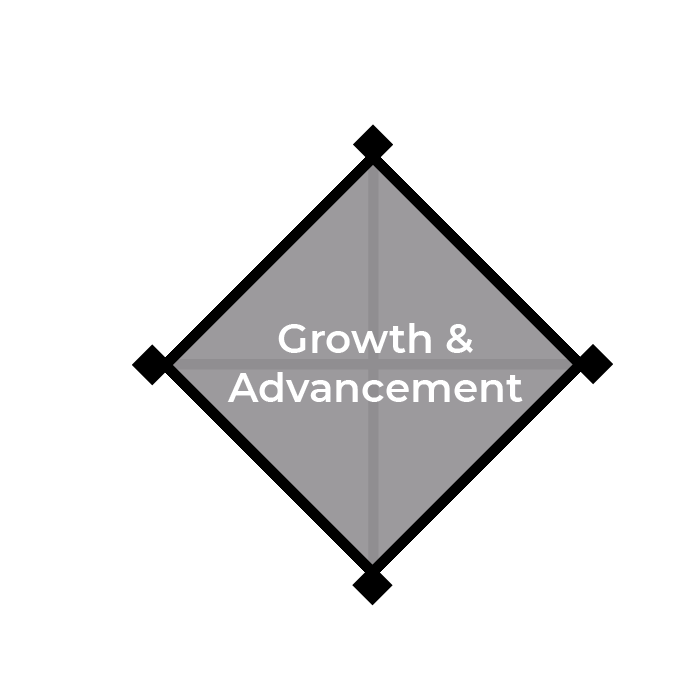
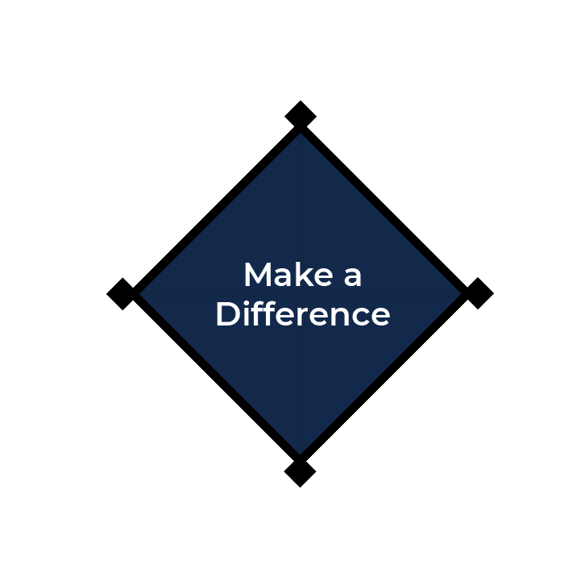
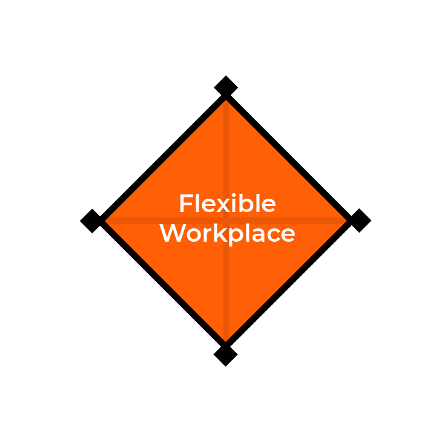
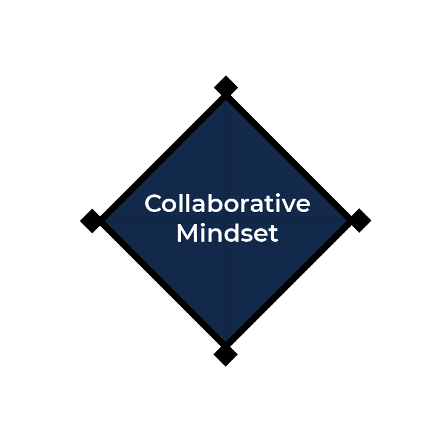

Illinois Value Proposition (IVP)
The IVP initiative helps Illinois employees define and express the unique value of working at the University. In FY25, employees explored themes like career growth, flexibility, and impact while building their own IVP models. The top finials highlight what our people value most about working at Illinois.
Top Five (5) Finials of 2025

Growth & Advancement
Benefits & Compensation

Make a Difference

Flexible Workplace

Collaborative Mindset